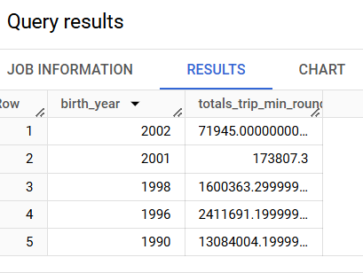

Chapter 17 Macros
A macro in dbt is a reusable piece of code. That’s it. A macro in dbt is what a function is to Python or JavaScript. The building block of a macro is the jinja template. Below is the structure of a dbt macro.
{% macro macro_name(arg1, arg2, ..., argN) %}
SQL logic here, using the parameters as needed.
{% endmacro %}
You begin a macro with the name macro and end it with endmacro. Macros are defined in SQL files and stored inside the already shipped macros folder in dbt.
17.1 Invoking a macro
There are three ways to call a macro. They are:
Using expression blocks
Call blocks
Run operation command
17.1.1 Invoking a macro using expression blocks
If the macro does not have any parameters, it can be invoked as a solo object like so:
{{ macro_name() }}
But if it has parameters, we have to call it with it’s entire entourage.
{{ macro_name(arg1, arg2, argN) }}
17.1.2 Invoke a macro using call blocks
In this method, one can invoke a macro inside another macro. Here is the template.
{% call called_macro( arg1, arg2, . . argN) %}
Code to be accessed by the macro called_macro
{% endcall %}
The above code calls a macro called called_macro and everything in between the { %call% } and {% endcall %} statements can be accessed using the caller() method.
Here is an example of a macro.
{% macro select_all_columns_macro(table_name) %}
SELECT *
FROM {{ table_name }}
WHERE {{ caller() }}
{% endmacro %}
Now, call the macro using call blocks.
{% call select_all_columns_macro('EVENT_TABLE') %}
CREATE_DATE >= '2020-02-18'::DATE
{%- endcall %}
When it is called it would render:
SELECT *
FROM EVENT_TABLE
WHERE CREATE_DATE >= '2020-02-18'::DATE17.1.3 Invoke a macro from the Command Line Interface (CLI)
To run a macro from the CLI or terminal, we use the dbt run-operation {macro} --args '{args}'{macro}: command. The macro will run with the arguments provided. The below macro being run from the CLI selects all columns from a table called my_table.
dbt run-operation select_all_columns --args '{table_name: my_table}'
The above are ways to invoke a macro but for simplicity purposes, for life is too complicated to add more complications from something miniature as macros, we shall rely on the first method of invoking macros using expressions.
17.2 Simple macro
Having known that a macro acts like a function, let’s create a macro that calculates the age of a bike rider. We already have the birth_year column, so getting age should just be subtracting birth year from the current year.
As earlier mentioned, macros should go into the macros folder. Create a calculate_age SQL file and inside it paste the following contents.
{% macro calculate_age (year) %}
(EXTRACT( YEAR FROM CURRENT_DATE() ) - {{ year }})
{% endmacro %}Remember, a macro is a function and thus what goes within the {% macro %} and {% endmacro %} expressions is the function itself! This explains why our calculate_age macro is so succinct. The (EXTRACT( YEAR FROM CURRENT_DATE() ) - {{ year }}) is just an SQL way of subtracting any column, referenced by the variable {{ year }} from the current year. Of course the {{ year }} column specified has to be numeric.
Alright. To see the calculate_age macro in action, create a biker_age SQL file inside the jinja directory. Paste the following content.
SELECT *,
{{ calculate_age("birth_year")}} AS AGE
FROM
{{ ref('citi_trips_long') }}
In the subchapter of Invoking a Macro we saw that we invoke a macro in the following format: {{ macro_name(arg1, arg2, argN) }}. The macro name goes first, followed by the arguments in brackets. We have essentially done this in the biker_age SQL file. The calclate_age() macro has been provided the column to calculate on, obviously the birth_year column. We use the AS keyword to create a new column with the alias AGE. Thereafter, we run the open sesame command dbt compile --select macros.
We got the following in the target directory, a biker_age SQL file with the following SELECT query:
SELECT *,
(EXTRACT( YEAR FROM CURRENT_DATE() ) - birth_year)
AS AGE
FROM
`dbt-project-437116`.`nyc_bikes`.`citi_trips_long`
The above should definitely result in a table with the AGE column at the far end.
17.3 Complex macro
The above was a simple macro that neatly drove the point home. How about a more complex macro, like one that works on an entire table, transforms it, has more than one argument and oh, one in which you can change the arguments? We are trying to work with a function where we cast things on sand, and not stone. That’s the kind of macro we need. Create a SQL called age_trips with the following code:
{% macro age_trips (column, duration, table_name, years = [1995, 1997, 2002]) %}
SELECT {{ column }},
SUM({{ duration }}) AS totals_trip_min_round
FROM {{ ref( table_name ) }}
WHERE {{ column }} IN (
{% for year in years %}
{# this will separate the years 1995, 1997 and 2002 with a comma, nothing out of this world #}
{{ year }}{% if not loop.last %}, {% endif %}
{% endfor %}
)
GROUP BY {{ column }}
ORDER BY {{ column }} DESC
{% endmacro %}Our intelligent mind (no pun intended) created a macro that selects a column, sums the time duration in that column but aggregates the sum based on certain numerical column values. It will not sum everything in the entire set but for certain values specified by the years variable. Additionally, we have preset the values to go into the years variables which are 1995, 1997 and 2002. Finally, to finish in a clean manner, we order the table based on arranging the specified column values in descending order.
Now is time to test our macro. Under the jinja directory, create a SQL file called age_trip_totals. It should have the below miniatuae code.
{{ age_trips(column='birth_year', duration='trip_min_round',
table_name='citi_trips_long', years = [1990, 1996, 1998, 2001, 2002]) }}What on earth just happened here? There was no SELECT statement as in the biker_age file? Yes, there wasn’t, and for the good reason in that we specifed our SELECT blueprint in the macros file, such that calling the age_trips function from within age_trips_totals file will invoke the SQL statement encapsulated by the age_trips function. If you run dbt compile --select macros the following SQL file will be compiled in the target directory.
SELECT birth_year,
SUM(trip_min_round) AS totals_trip_min_round
FROM `dbt-project-437116`.`nyc_bikes`.`citi_trips_long`
WHERE birth_year IN (
1990,
1996,
1998,
2001,
2002
)
GROUP BY birth_year
ORDER BY birth_year DESC
Pasting this query on BigQuery will give us a table with the total trip duration for all bikers aggregated into specific years: 1990, 1996, 1998, 2001 and 2002.

One can also create a view of this macro model using dbt run --select age_trip_totals. A biker_age view should appear under the nyc_bikes dataset.
By doing the above, we not only created a macros with default parameters, but we could also change them and get valid results as seen when playing around with the years argument in our age_trips() function. As a matter of fact, the years parameter doesn’t have to take years per se, it can actually work with any numerical column. But we just specified the name years as a clue. In the age_trip_totals2 SQL file, we specified the ages of interest from within the AGE column of our biker_age view.
{{ age_trips(column='AGE', duration='trip_min_round',
table_name='biker_age', years = [22, 27, 29]) }}Now let’s compile this model and see the result:
dbt compile --select age_trip_totals2We get the following output in our terminal and by extension, the age_trip_totals2 SQL file under the target directory.
19:53:44 Concurrency: 1 threads (target='dev')
19:53:44
19:53:44 Compiled node 'age_trip_totals2' is:
SELECT AGE,
SUM(trip_min_round) AS totals_trip_min_round
FROM `dbt-project-437116`.`nyc_bikes`.`biker_age`
WHERE AGE IN (
22,
27,
29
)
GROUP BY AGE
ORDER BY AGE DESC
Pasting the above in BigQuery gives us an aggregation of the total trip duration for people aged 29, 27 and 22.
As mentioned earlier, and as show with a quick example of age_trip_totals model, we can create views of each of our macro reliant models. Since they are all within the jinja directory, the following does the trick: dbt run --select jinja. This should create a view of each of our models created in this chapter.
Below is a snippet of the creation of views.
-- snip --
20:15:05 8 of 8 START sql view model nyc_bikes.age_trip_totals2 ......................... [RUN]
20:15:07 8 of 8 OK created sql view model nyc_bikes.age_trip_totals2 .................... [CREATE VIEW (0 processed) in 2.28s]
-- snip --